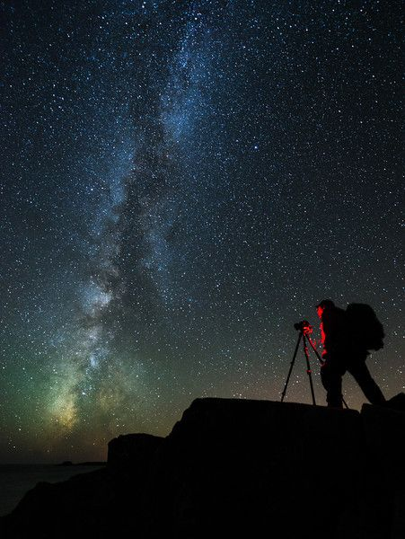

About me
Hello again! This page provides further insight into who I am by highlighting the experiences, interests, and motivations that have shaped my values and guide the path I'm pursuing today.

Fun facts:
- I'm a first-generation Mexican-American student and one of seven children.
- I'm fascinated by space and enjoy psychological thrillers, I often find myself returning to Shari Lapena's work.
- I love traveling and have been fortunate enough to visit 23 out of 50 states, as well as Cuba and Puerto Rico. I plan to visit Iceland soon!
- I used to dream of being an astrophotographer because I loved revealing what hides in the dark. That same curiosity now drives my interest in digital forensics.
- I was invited to attend an FBI collegiate academy in February.

What are my motivations?
Growing up in a home affected by domestic violence exposed me to the system's shortcomings and the ways it can fail to protect those who need it most.
These experiences shaped my commitment to seeking truth, accountability, and fairness. They also informed my perspective on the systems we rely on and strengthened my resolve to be a voice for those who feel powerless.
This motivation drives my determination to excel and be someone who makes a meaningful impact in the field of digital forensics.